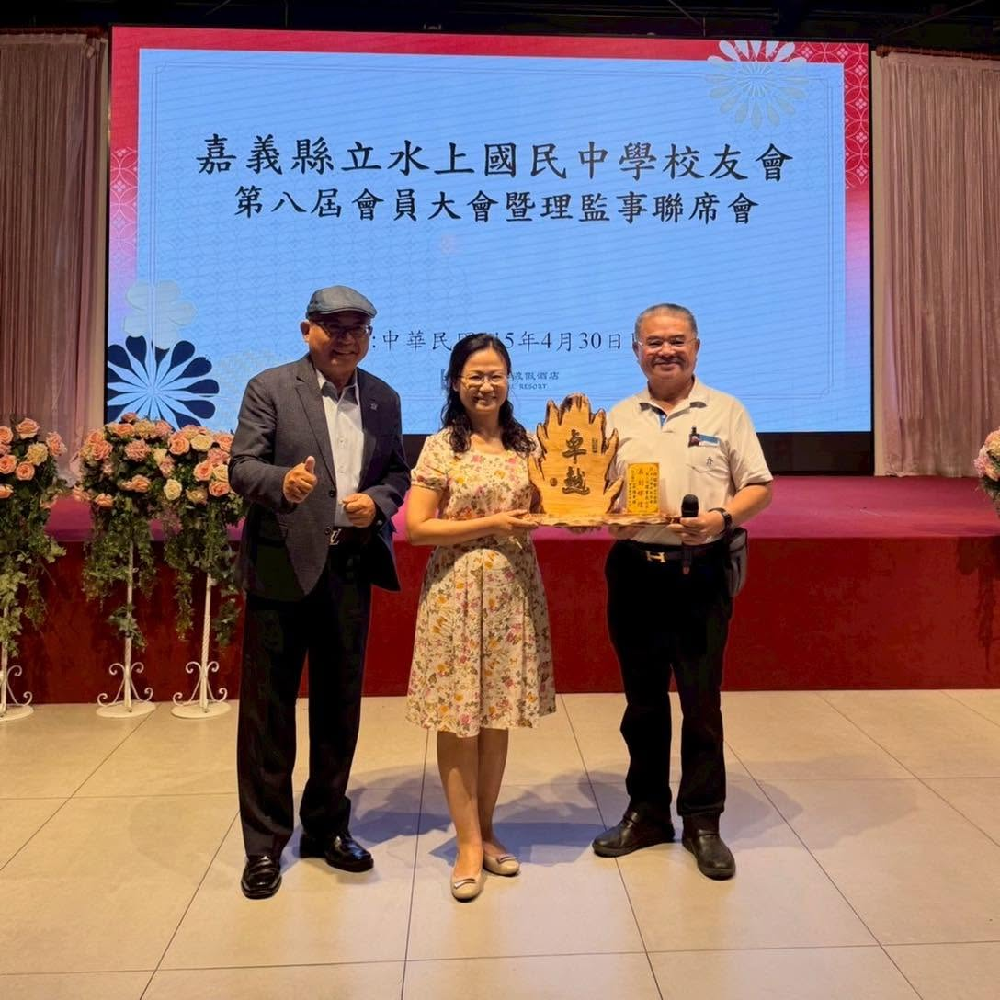
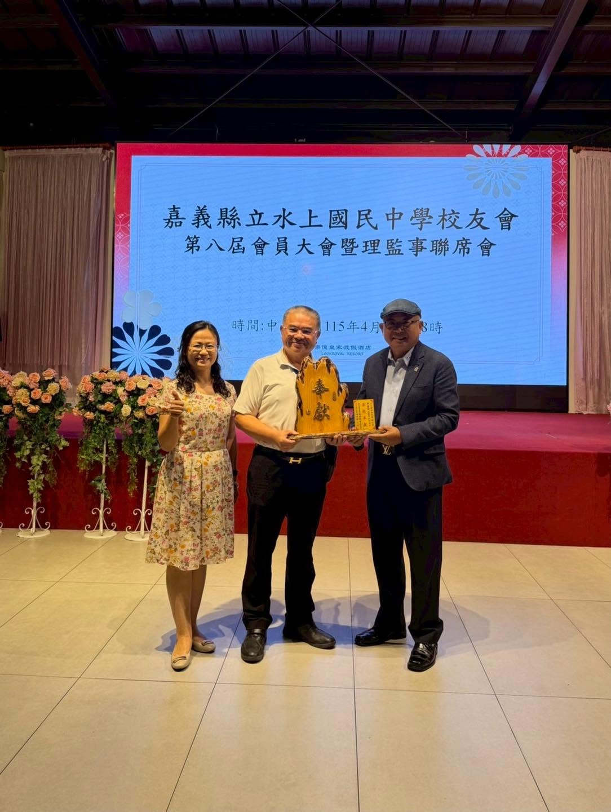

傳承
115年4月30日
第八屆校友會會員大會暨理監事聯席會交接典禮
校友會於嘉義樂億皇家渡假酒店完成第八屆交接，新任會長林銘賢正式接任，同時慶祝水上國中籃球隊全國聯賽佳績。
校 友 會 官 方 網 站
水上國中校友會已歷經多屆傳承，持續凝聚校友力量
凝聚嘉義縣立水上國民中學歷屆畢業校友，促進校友間之情誼聯繫，協助母校各項教育發展，共同回饋水上鄉地方社區。
積極支持母校籃球隊征戰全國賽事，設置黃盛彬先生獎助學金，鼓勵在學優秀學生，每年舉行頒獎典禮。
定期召開理監事聯席會，辦理校友聯誼活動，建立 LINE 群組保持校友即時聯繫，讓每位水中人都能找到同窗。
校友會已歷經多屆理監事傳承，每屆均舉行正式交接典禮，確保組織持續運作，讓校友情誼世代延續不斷。
北回歸線旁的學校，八掌溪畔的記憶
嘉義縣縣議會第四屆第六次大會通過增設「嘉義縣立水上初級中學」，響應政府「一鄉鎮一初中」政策。縣政府派陳勇先生擔任籌備主任。
取得水上鄉土地三甲及建校經費三十萬元，借東石中學水上分部名義招生，首屆招收四班共二百四十名學生，奠立建校基礎。
民國五十年八月一日，嘉義縣立水上初級中學正式成立，開啟水上鄉國中教育，成為在地青年求學的重要搖籃。
興建綜合大樓，包含大禮堂、科學館、圖書館，於民國五十六年六月落成，大幅改善教學環境。
配合九年國民教育政策，改制為「嘉義縣立水上國民中學」，班級擴增至二十四班，設忠和分部，翌年獨立為忠和國中。
歷經六十餘年，全校學生逾四百人，校友會歷屆交棒傳承，設有籃球隊征戰全國，校友遍佈各行各業，持續守護水上鄉的教育根基。
每一次相聚，都是水中情誼的延續

第八屆校友會交接典禮 · 中華民國115年4月30日 · 嘉義樂億皇家渡假酒店

新任會長林銘賢（右）接受黃盛彬前理事長（左）交接，陳幸琪校長（左一）見證
校友會於嘉義樂億皇家渡假酒店完成第八屆交接，新任會長林銘賢正式接任，同時慶祝水上國中籃球隊全國聯賽佳績。
第七屆第五次理監事聯席會在黃盛彬理事長及陳幸琪校長帶領下，互動熱絡、笑聲此起彼落，展現校友會的活力與向心力。
校友會設立黃盛彬先生獎助學金，每年舉行頒獎典禮，鼓勵在學表現優異的學生，體現校友回饋母校的精神。
更多活動動態，請關注
水上國中官方臉書水中人的驕傲，遍佈政界、藝文、體育各界
強靂集團董事長（「拖把大王」）、北回培英文教協會理事長，水上鄉出身，長期投入公益助學，2026年4月榮任水上國中校友會會長，出錢出力、格局前瞻，深受各界敬佩。
法學博士，曾任嘉義縣縣長、立法委員，被譽為「吃泥土長大的法學博士」，為第一屆校友中最具代表性的政界人士。
曾任立法委員，同時是知名本土歌手，以一曲曲台語歌謠深入人心，是水上國中兼跨政界與演藝圈的代表校友。
台灣女子籃球運動員，出身水上國中籃球隊，後就讀東泰高中、世新大學，活躍於 WSBL 職業聯賽，是水中籃球傳統的驕傲代表。
藝文界人士，曾撰寫〈水鄉澤國〉一文，記錄水上國中的求學歲月與水上鄉的地方風情，為母校留下珍貴的文字記憶。
校友回饋母校，支持下一代學子
黃盛彬先生長期擔任水上國中校友會理事長，對母校貢獻卓著。為回饋母校、鼓勵後進，設立「黃盛彬先生獎助學金」，每年舉行頒獎典禮，支持在學學生持續努力向上。
114年黃盛彬先生
獎助學金頒獎典禮
無論您現在身在何處，您永遠是水中人
掃描 QR Code 加入水上國中校友會 LINE 群組，即時掌握校友會消息與活動。
透過學校聯絡校友會，確認入會手續與最新活動資訊。
05-2682024
嘉義縣立水上國民中學凡曾就讀嘉義縣立水上國民中學（含各屆畢業生及肄業校友）均歡迎加入
校友會透過學校聯絡窗口服務每位校友
嘉義縣水上鄉水上村進學街 45 號
05-2682024
05-2601029